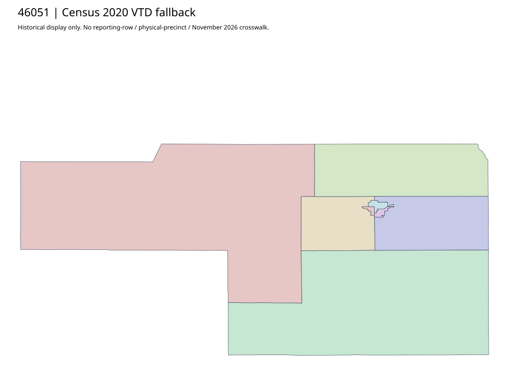

304 ordered indexGrant | 46051
Outside accepted priority parents. Complete SOS authority record and historical Census2020 fallback retained; no deep current county map investigation or leaf/current join claimed.
0 priority / 18 full historical observations. Parent is a summary ancestor, not additive to leaves. No physical feature matches or current reporting crosswalk approved.
Acquired shared-parent assets
No complete county precinct-map original acquired from this bounded chain. Use qualified fallback; roster/landing/error bodies are retained as evidence.
Census2020 fallback
7 native historical VTD features. Entire785-feature ZIP original retained once, all66 counties. Yankton has one countywide VTD. No current/reporting allocation. complete original gzip

Full binary/attribute/geometry QA
Observed authority/acquisition routes
Complete SOS authority fields including original blank/masked values: parent inventory. No contacts were sent.
Ordered full children
- Precinct-33 | 428 source votes | remainder
- Precinct-43 | 425 source votes | remainder
- Precinct-22 | 355 source votes | remainder
- Precinct-11 | 340 source votes | remainder
- Precinct-42 | 305 source votes | remainder
- Precinct-47 | 231 source votes | remainder
- Precinct-41 | 224 source votes | remainder
- Precinct-46 | 220 source votes | remainder
- Precinct-54 | 161 source votes | remainder
- Precinct-45 | 158 source votes | remainder
- Precinct-21 | 155 source votes | remainder
- Precinct-44 | 145 source votes | remainder
- Precinct-49 | 106 source votes | remainder
- Precinct-12 | 93 source votes | remainder
- Precinct-32 | 89 source votes | remainder
- Precinct-52 | 82 source votes | remainder
- Precinct-31 | 57 source votes | remainder
- Precinct-53 | 56 source votes | remainder